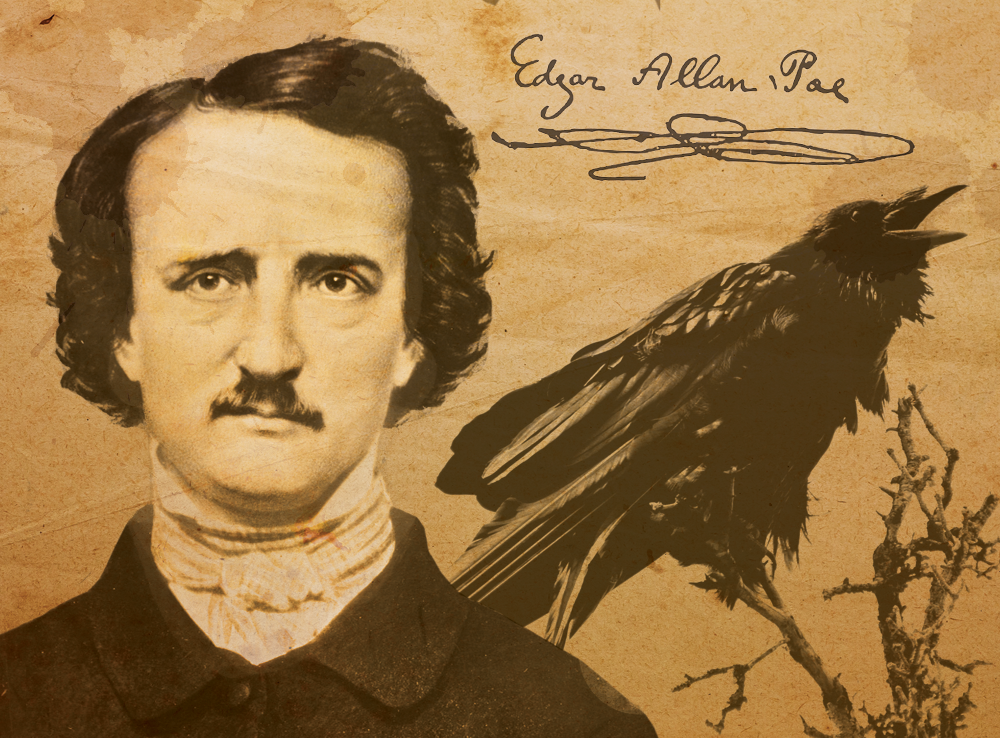

 Edgar Allan Poe nación el 19 de enero de 1809 en Boston, Massachusetts. Ejerció como poeta, crítico y editor. Es uno de los mayores maestros universales del relato corto, padre del terro psicológico, precursor del relato detectivesco y de la ciencia ficción. Contribuyó también a renovar la novela gótica, cuyas maneras adaptó a la realidad estadounidense para aproximarla a su público.
Ingresó a la unidad de Virginia, Caliornia en los Estados Unidos, donde destacó en el estudio de varios idiomas. Después, permaneció un tiempo en Boston, donde entró en los círculos literarios y publicó su primera obra, Tamerlan y Otros poemas (Tamerlane and Other Poems,1827), la cual se adscribía dentro del movimiento romántico y mostraba su vocación europeísta en la poesía, especialmente byroniana.
Le seguiriía un segundo trabajo tras abandonar el ejército: Al Aaraaf, Tamerlan y poemas menores(Al Aaraaf Tamerlane and Minor Peoms,1829). Y, a mediados de los años treinta se estableció en la ciudad de Baltimore, donde empezó a ejercer de periodista. Empezaría también en esta época su interés por los cuentos breves, género en el que Poe se convertiría pronto en el maestro indiscutible.
En 1840 logró publicar una antología de relatos, aunque ya habían aparecido anteriormente en los periódicos: Cuentos de lo grotesco y arabesco (Tales of the Grotesque and Arabesque, 1839). Contenía algunas de sus mejores obras como La caída de la Casa Usher. Gracias a esta publicación y a ganar varios premios, especialmente con el célebre poema El cuervo (The Raven , 1845), alcanzó la fama y pudo realizar una gira por el país recitando sus poemas.
El tres de octubre de 1849 el doctor James E. Snodgrass le halló en estado de enajenación mental frente a una taberna, en la ciudad de Baltimore, y vestido con ropas que no eran suyas. Se le trasladó rápidamente al hospital, donde sufrió alucinaciones que se iban alternando con momentos esporádicos de lucidez. Se ha dicho a menudo que sufría "delirium tremens", pero no se sabe a ciencia cierta. Murió al cabo de pocos días, el siete de octubre. Las causas de su muerte no se conocen con exactitud, pero los síntomas de su dolencia, descritos por el doctor Snodgrass, eran compatibles con la rabia, que podía haberle contagiado inadvertidamente un gato o un perro. En cualquier caso se sabe que había sufrido malaria un año antes, lo que le dejó en un estado de salud precario, y que estaba débil del corazón. Sus últimas palabras fueron: "Que Dios ayude a mi pobre alma".